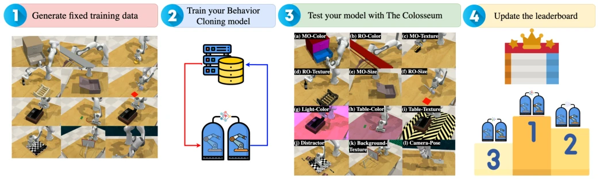
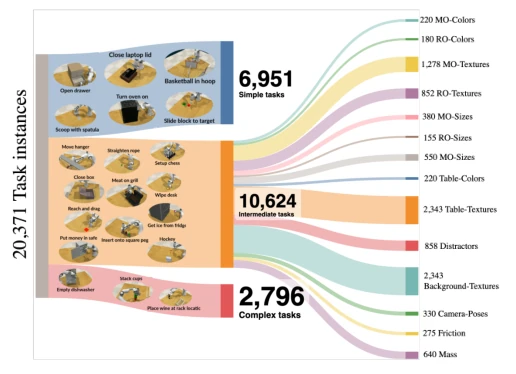
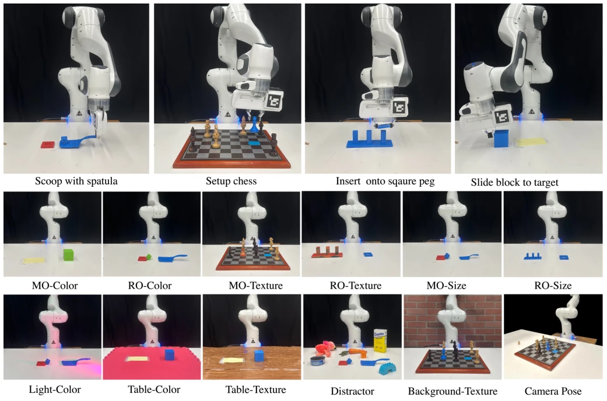
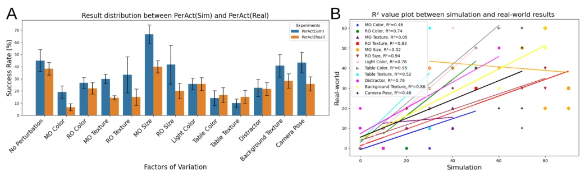
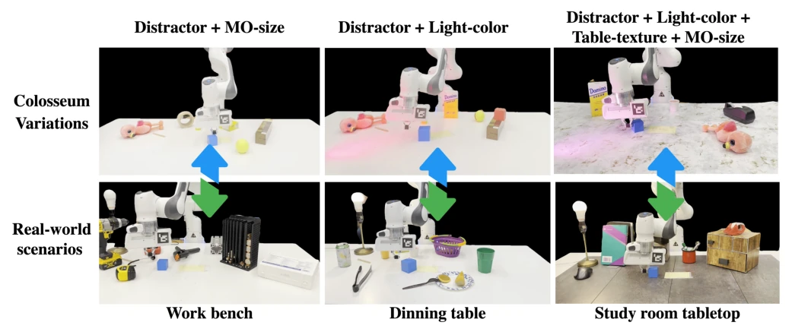
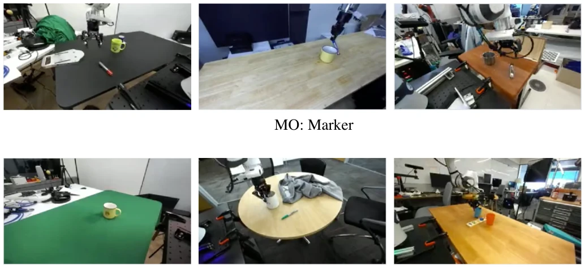
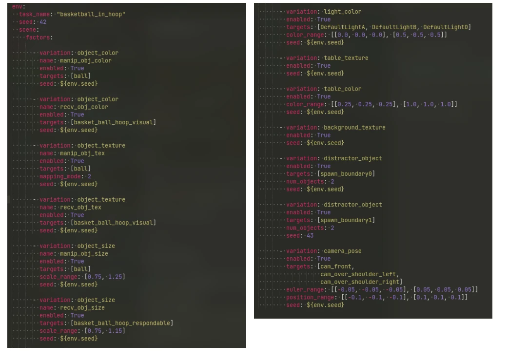
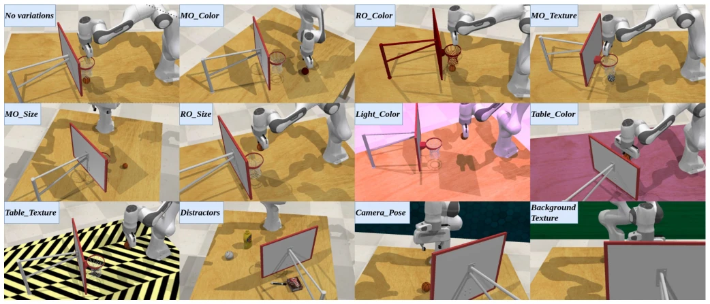
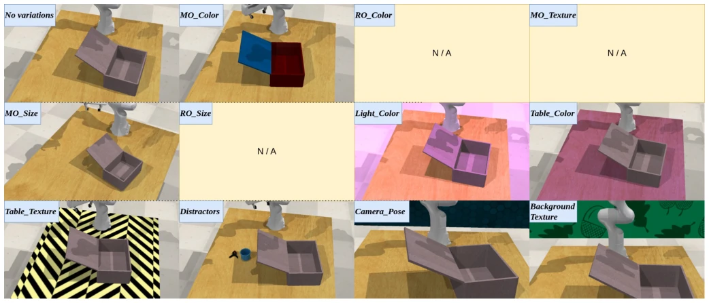
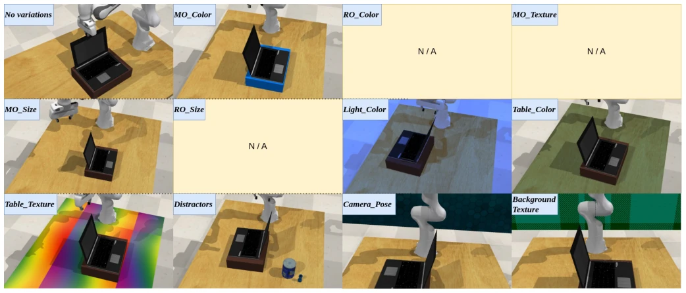

这个基准终于承认了机器人策略在真实世界里有多脆弱。THE COLOSSEUM 用 14 种环境扰动狠狠打了 SOTA 模型的脸，成功率暴跌 30-50%，叠加后更是惨不忍睹。虽然 3D 模型比 2D 强，但面对 distractors 和光照依然挂得很快。最大的槽点是现实世界验证只做了 4 个任务，且榜单目前只收 BC 方法，RL 和 Diffusion 还在门外。不过，仿真与真实结果的相关性 ($R^2=0.614$) 确实给省钱的仿真测试提供了底气，开源 3D 打印模型也算良心。这名字起得好，机器人进去就是角斗场，不过希望以后能多放点 RL 选手进来。
This benchmark finally acknowledges the fragility of robot policies in the real world. THE COLOSSEUM dealt a severe blow to SOTA models using 14 environmental perturbations, causing success rates to plummet by 30-50%, and even more disastrously when combined. Although 3D models outperform 2D, they still fail rapidly when facing distractors and lighting. The biggest criticism is that real-world validation was conducted on only 4 tasks, and the leaderboard currently only accepts BC methods, leaving RL and Diffusion outside. However, the correlation between simulation and real-world results ($R^2=0.614$) indeed provides justification for cost-saving simulation testing, and open-sourcing 3D printed models is commendable. The name is apt, as robots entering become gladiators in an arena, though it is hoped that more RL participants can be included in the future.
The ultimate goal of embodied intelligence is generalization, yet the current status quo is that most research is evaluated within a 'greenhouse' [64, 22]. Existing benchmarks such as GROOT [78], LIBERO [39], or KitchenShift [71] primarily focus on task diversity, lacking a unified evaluation of system environmental perturbations. FactorWorld [70] includes perturbations but lacks sufficient dimensions and does not support 3D. We require a platform capable of systematically testing policy robustness across 14 axes including color, texture, lighting, and physical attributes; otherwise, 'top students' within the training set will reveal their true nature upon entering the real world. This covariate shift is common in OoD research, yet the robotics field has long lacked standard testbeds, causing robustness reported in papers to often be merely an illusion.
Based on an extension of RLBench [32], we construct a benchmark comprising 20 tasks and 14 perturbation factors. Perturbations are categorized into four types: Manipulated Object (MO), Receiving Object (RO), Background, and Physical. Implementation utilizes PyRep [31] to control the CoppeliaSim [58] simulator, allowing flexible combination of perturbations via YAML configuration. The challenge process is standardized: 100 unperturbed demonstrations for training, with a fixed 25 episodes testing 14 perturbations. The real-world component employs a Franka Panda robotic arm, replicating simulation objects via 3D printing to ensure physical attributes (e.g., friction, mass) and visual attributes (color, texture) are reproducible, achieving Sim-to-Real alignment. Configuration files define perturbation parameters for each task in detail, facilitating researcher reproduction and extension, truly realizing benchmark openness and scalability.
实验Experiments
评测 5 个 SOTA 模型（VoxPoser, R3M, MVP, PerAct, RVT）。指标为任务平均成功率。发现 3D 模型整体优于 2D，但颜色、光照和 distractors 是最大杀手。所有扰动叠加时成功率下降≥75%。训练时加入所有扰动仅提升 21.1%，说明单纯数据增强不够。仿真与真实结果相关性显著 ($R^2=0.614$)，尤其在背景纹理、光照等因子上一致。消融实验表明，即使有 ground truth 扰动场景，任务难度本身也会显著增加。VoxPoser 作为零样本模型表现意外稳健，但通用性仍受限，这提示了预训练世界模型在泛化上的潜力。
Evaluated 5 SOTA models (VoxPoser, R3M, MVP, PerAct, RVT). The metric is task average success rate. It was found that 3D models are overall superior to 2D, but color, lighting, and distractors are the biggest killers. When all perturbations are combined, the success rate drops by ≥75%. Adding all perturbations during training only yields a 21.1% improvement, indicating that data augmentation alone is insufficient. The correlation between simulation and real-world results is significant ($R^2=0.614$), particularly consistent in factors such as background texture and lighting. Ablation experiments indicate that even with ground truth perturbation scenarios, the task difficulty itself increases significantly. VoxPoser, as a zero-shot model, performed unexpectedly robustly, but generalization remains limited, suggesting the potential of pre-trained world models in generalization.
其他图片Other Figures

Fig. 2: THE COLOSSEUM Challenge. This challenge is designed to enhance generalization of Behavior Cloning (BC) models in robotic manipulation tasks. It involves four key phases: 1) Participants generate a standard training dataset from 20 tasks with 100 demonstrations each, without perturbation_factors. 2) Participants train their BC models using this standardized dataset. 3) The models are restricted to evaluate over a fixed 25 episodes across 14 different perturbation_factors. 4) Models are ranked on a leaderboard based on the percentage change in their performance across these factors. We’ve shown that simulation aligns with real-world evaluation, so participants can expect similar generalization when participating in the simulation benchmark.

Fig. 3: THE COLOSSEUM benchmark distribution. This benchmark encompasses 14 perturbation_factors within 20 distinct RLBench tasks, categorized into three tiers (simple, intermediate, and complex) according to the number of way-points involved (task horizon). Collectively, THE COLOSSEUM presents 20,371 unique task perturbations instances.

Fig. 4: Real-World training tasks and their evaluation time perturbations. A PerAct agent, trained using real-world demonstrations for the four tasks shown, was tested on real-world perturbation_factors. This evaluation involved perturbing factors similar to the procedural benchmark in the simulation.

Fig. 6: Real robot results and alignment analysis on perturbation_factors across 4 tasks. A) The plot illustrates the empirical performance of two models, one trained using real-world data and the other with simulated data, each tested across 10 episodes and 3 runs in their respective environments. Additionally, it displays a uniform distribution of standard deviation between the models, highlighting which perturbation_factors align more strongly with empirical success rates. B) To examine the correlations between simulation and real-world results for each perturbation independently, we have plotted a scatter chart. This chart includes data points from one run for each task. We calculated the R2 value for each task and illustrated their respective best-fit lines on the chart.

Fig. 8: Example rollouts using THE COLOSSEUM perturbations in tandem with comparable real-world scenarios. We combine various THE COLOSSEUM variations to form three combinations of compounding perturbation scenarios, each paired with a curated real-world scene (workbench, dining table, study room table) featuring the same set of perturbations that are naturally present in the scene, similar to the approach used by [9]. We evaluate these combinations using PerAct model trained on No Perturbation, and aim to establish a correlation between our simplified compounding perturbation scenarios and realistic real-world scenes.

Fig. 9: Dataset samples from DROID showing scene variations including MO_Color/Texture/Size, Light_Color, Table_Color/Texture, Distractors, Camera_Pose, Background, supporting our choice perturbation_factors.

Fig. 10: Sample of a yaml configuration file for THE COLOSSEUM for one task. This configuration file controls the application of each perturbation_factors for this task. One or more factors can be applied at the same time in one task instance, as compatible.

Fig. 11: Perturbations for the basketball_in_hoop task

Fig. 12: Perturbations for the close_box task

Fig. 13: Perturbations for the close_laptop_lid task